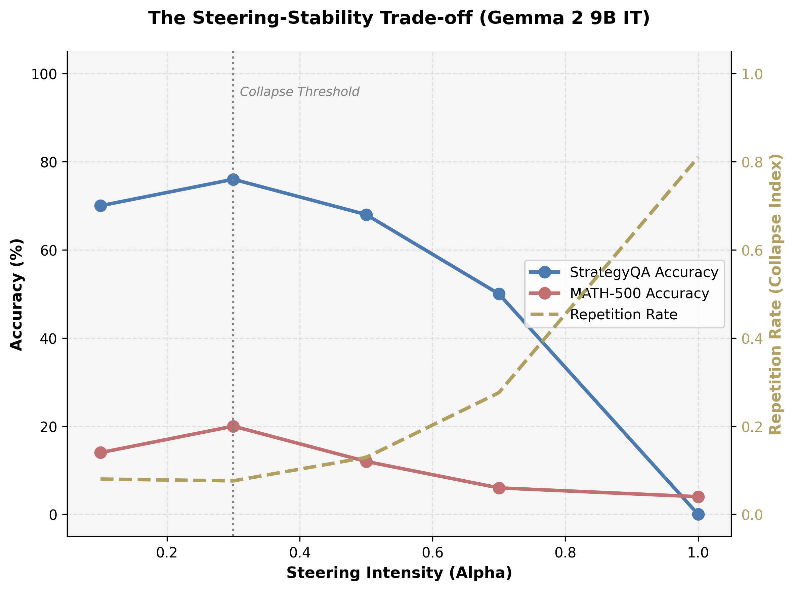
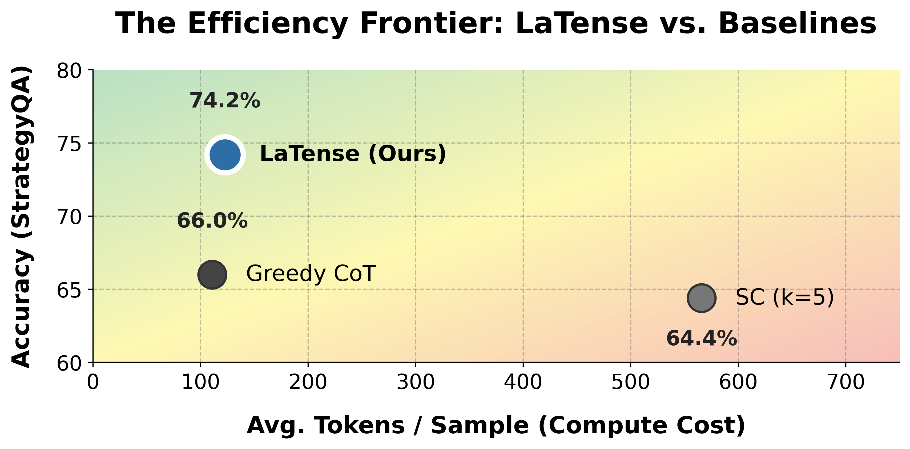

Interactive Geometric Governor
Drag the angle slider $\theta$ below to observe how LaTense dynamically modulates intervention magnitude $\Delta h$ in real time. When the hidden state $h$ is naturally aligned with the reasoning vector $v$ (small $\theta$), intervention attenuates toward zero to preserve critical factual circuits; when $h$ diverges (large $\theta$), restorative pressure peaks to rescue the reasoning trajectory.
Interactive Steering Visualizer
Motivation: The Latent Collapse Problem
Activation addition—adding a static steering vector $v$ across inference steps $(h' = h + \alpha v)$—has emerged as a compelling training-free method for controlling model behavior. However, static interventions apply constant, rigid pressure regardless of the model's instantaneous representational state.
Circuit Overwriting
In highly-optimized dense architectures (e.g. Gemma 2 and Qwen 2.5), constant steering overrides delicate factual and syntax circuits, triggering catastrophic reasoning degradation.
Text-Looping Collapse
Static interventions trap generation trajectories in degenerate self-reinforcing basins, inflating repetition rates up to 38.07% under standard CAA.
Inflexible Strength
A constant coefficient $\alpha$ over-steers states that are already well-aligned while under-correcting severely drifted tokens.
The LaTense Mechanism
LaTense dynamically modulates steering intensity per token through two geometric principles:
1. Alignment Attenuation (Cosine Penalty): We attenuate steering pressure proportionally to local directional alignment: $$G_{align}(h, v) = 1 - \cos(h, v) = 1 - \frac{h \cdot v}{\|h\| \|v\|}$$
2. Manifold-Consistency (Norm Scaling): We scale proportionally to the relative magnitude of the hidden state to prevent out-of-distribution norm displacement: $$G_{norm}(h, v) = \frac{\|h\|}{\|v\|}$$
Combining both geometric gates yields the closed-form LaTense intervention applied at each target layer: $$h' = h + \alpha \cdot (1 - \cos(h, v)) \cdot \frac{\|h\|}{\|v\|} \cdot v$$

Figure 1: Accuracy vs. Repetition Tradeoff Curves. Accuracy (solid) and Repetition Rate (dashed) across steering strengths $\alpha$. Static CAA triggers rapid repetition collapse, whereas LaTense maintains 0.00% repetition across all coefficient ranges.
Benchmark Performance & Zero Looping
We evaluate LaTense across three benchmark tasks spanning strategic commonsense reasoning (StrategyQA), formal multi-step mathematics (MATH-500), and open-domain factual retrieval (TriviaQA).
| Model | Task | Greedy Base | Static CAA | LaTense (Ours) | Self-Consistency $(k=5)$ |
|---|---|---|---|---|---|
| Llama 3.1 8B Instruct | StrategyQA | 71.40% | 71.75% | 73.65% | 74.20% |
| MATH-500 | 43.80% | 44.07% | 44.20% | 48.60% | |
| TriviaQA | 76.04% | 75.30% | 76.04% | 76.80% | |
| Gemma 2 9B IT | StrategyQA | 57.40% | 65.60% | 65.60% (+8.2%) | 62.80% |
| MATH-500 | 64.40% | 65.75% | 65.40% | 71.20% | |
| TriviaQA | 70.18% | 68.75% | 69.83% | 70.35% | |
| Qwen-2.5-7B-Instruct | StrategyQA | 70.20% | 67.20% | 68.00% | 72.40% |
| MATH-500 | 80.80% | 80.40% | 80.80% | 84.60% | |
| TriviaQA | 53.30% | 52.72% | 53.30% | 54.20% |
| Model Family | Task | Static CAA Repetition | LaTense Repetition | Status |
|---|---|---|---|---|
| Llama 3.1 8B Instruct | StrategyQA | 1.05% | 0.00% | Looping Eliminated |
| Gemma 2 9B IT | StrategyQA | 3.35% | 0.00% | Looping Eliminated |
| Qwen-2.5-7B-Instruct | MATH-500 (Sweep) | 38.07% | 0.00% | Looping Eliminated |
Efficiency Frontier (4.6× Compute Reduction)
While sampling-based test-time compute methods (like Self-Consistency $(k=5)$ or Best-of-$N$) generate multiple full candidate chains to aggregate majority votes, LaTense executes on a single forward pass $(k=1)$ with negligible geometric gating overhead (<1.2%), reducing total generated tokens by 4.6× while remaining competitive with multi-path sampling.

Figure 2: Accuracy vs. Test-Time Compute (FLOPs/Tokens). LaTense achieves substantial accuracy improvements with zero sample-multiplicity overhead, providing a highly efficient alternative to heavy multi-sample generation.
BibTeX Citation
@misc{egbuna2026latense,
title={LaTense: Mitigating Latent Collapse in Activation Steering via Geometric Alignment},
author={Egbuna, Nathan},
year={2026},
note={Preprint},
url={https://nathanegbuna.com/latense}
}